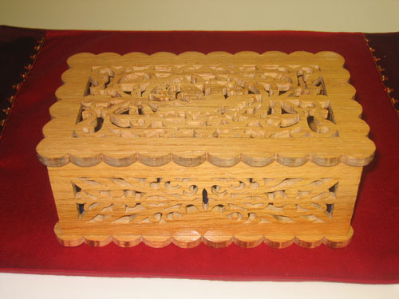

Jewelry Box for Joyce: Christmas 2006

This was my first foray into the world of scroll sawing, taught to me by my grandfather over Christmas break of 2006. As I am very impatient with wanting real results, practicing on scrap pieces of wood did not last very long. This project took me somewhere around 20-25 hours to cut (not including the assembly or staining). It was probably slightly above my difficultly level (for a first project ever), but I knew that Joyce had wanted her own jewelry box for a while, and had planned to make it for her (and if I hadn't made it, she wouldn't have had half a Christmas present). Frankly, even though I know where the tiny flaws in my cutting are, it still looks amazing. The only problem now is that I don't have his high quality wood-shop setup, along with his many added modifications to help streamline the process.